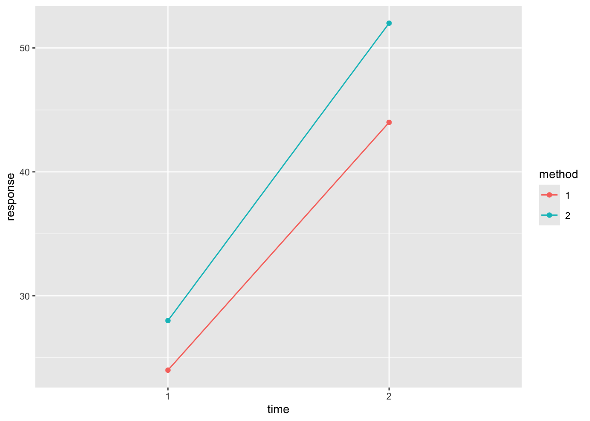

library(tidyverse)
library(ggplot2)14 Multifactor ANOVA
Multifactor ANOVA (also known as factorial ANOVA) is a statistical method used to examine the effects of two or more factors (independent variables) on a dependent variable. It allows for the analysis of the main effects of each factor as well as the interaction effects between factors. This method helps in understanding how different factors, together or separately, influence the response variable.
14.1 Prerequisite
14.2 Factorial design
Factorial design is an experimental setup that involves two or more factors, each with multiple levels, and tests all possible combinations of these factors. This design is widely used in various fields like medicine, biology, and psychology to analyze the simultaneous influence of multiple factors on an outcome.
Example 1:
A experiment involved randomly dividing 20 rabbits into 4 groups, with 5 rabbits in each group, to perform a suture test after nerve injury. The treatments consisted of a combination of two factors. Factor A was the suture method, which had two levels: a1 and a2. Factor B was the time after suturing, which also had two levels: b1 and b2. The experimental results were the axon transmission rate (%) after nerve suturing for each rabbit, as shown in Table 14.1 . To compare the effects of different suture methods and post-suture times on axon transmission rates.
df <- read_csv(
file = "datasets/ex14-01.csv",
col_types = list(
method = col_factor(),
time = col_factor(),
response = col_double()
)
) | a1_1 | a1_2 | a2_1 | a2_2 |
|---|---|---|---|
| 10 | 30 | 10 | 50 |
| 10 | 30 | 20 | 50 |
| 40 | 70 | 30 | 70 |
| 50 | 60 | 50 | 60 |
| 10 | 30 | 30 | 30 |
model <- aov(response ~ method * time, data = df)
summary(model)#> Df Sum Sq Mean Sq F value Pr(>F)
#> method 1 180 180 0.600 0.4499
#> time 1 2420 2420 8.067 0.0118 *
#> method:time 1 20 20 0.067 0.7995
#> Residuals 16 4800 300
#> ---
#> Signif. codes: 0 '***' 0.001 '**' 0.01 '*' 0.05 '.' 0.1 ' ' 1When analyzing a dataset with two or more independent variables, you often want to understand how each variable independently affects the outcome (main effect) and whether the effect of one variable depends on the level of another (interaction effect).
14.2.1 Main effect
The main effect refers to the impact of one independent variable on the dependent variable, ignoring the other variables. In a factorial design with multiple independent variables, a main effect is the effect of one factor averaged across the levels of the other factors. It examines the effect of each independent variable in isolation.
method
The p-value for method is 0.4499, which is much greater than 0.05. This suggests that the different methods do not have a statistically significant effect on the response variable. The F value of 0.6 further indicates that the variation in the response explained by the method is weak, and there is no significant difference between the methods in terms of their impact on the outcome.
time
The p-value for time is 0.0118, which is less than 0.05, indicating that time has a statistically significant effect on the response. The F value of 8.067 supports this conclusion, showing that the response variable changes significantly across different time points.
14.2.2 Interaction effect
An interaction occurs when the effect of one independent variable depends on the level of another independent variable. This means that the effect of one factor is not consistent across the levels of the other factor. An interaction suggests that the variables are not independent in their effects on the dependent variable.
method:time
The p-value for the interaction effect is 0.7995, which is much greater than 0.05, indicating that there is no significant interaction between method and time. This means that the effect of the method on the response does not depend on the time. In other words, the impact of the methods is consistent across different times.
14.2.3 Visualizing the difference
A common way to visualize main and interaction effects is through interaction plots. If there’s no interaction, the lines for method 1 and method 2 in the graph of axon transmission rate against factor B will be parallel. This means the difference between the methods is the same regardless of factor B. If there is an interaction, the lines will cross or diverge, indicating that the effect of the method differs depending on the time after suturing.
# Draw an interaction plot
ggplot(df, aes(x = time, y = response, color = method, group = method)) +
geom_line(stat = "summary", fun = "mean") +
geom_point(stat = "summary", fun = "mean")